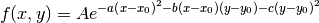
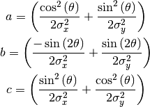

Bases: astropy.modeling.core.Parametric2DModel
Two dimensional Gaussian model.
| Parameters: | amplitude : float
x_mean : float
y_mean : float
x_stddev : float
y_stddev : float
theta : float, optional
cov_matrix : ndarray, optional
|
|---|
See also
Notes
Model formula:

Using the following definitions:

Attributes Summary
| amplitude | |
| param_names | list() -> new empty list |
| theta | |
| x_mean | |
| x_stddev | |
| y_mean | |
| y_stddev |
Methods Summary
| deriv(x, y, amplitude, x_mean, y_mean, ...) | Two dimensional Gaussian function derivative |
| eval(x, y, amplitude, x_mean, y_mean, ...) | Two dimensional Gaussian function |
Attributes Documentation
Methods Documentation
Two dimensional Gaussian function derivative
Two dimensional Gaussian function